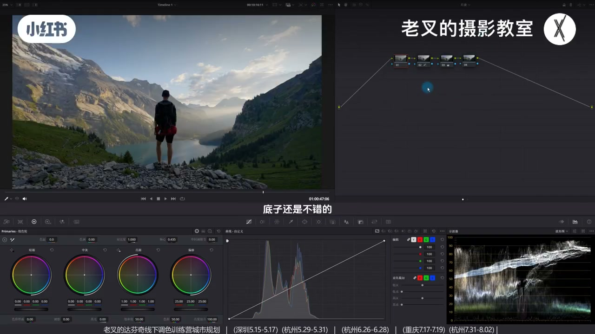
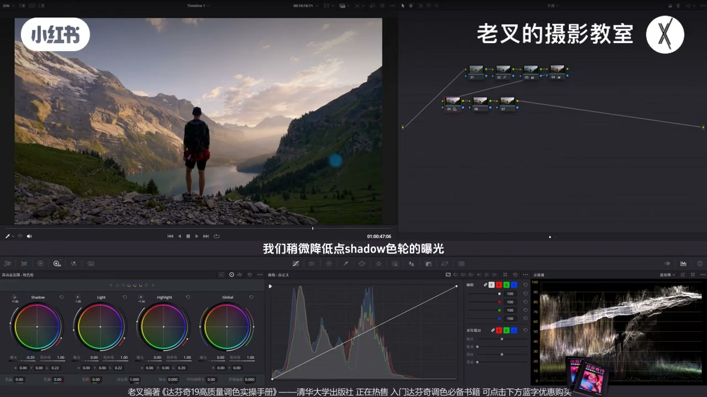
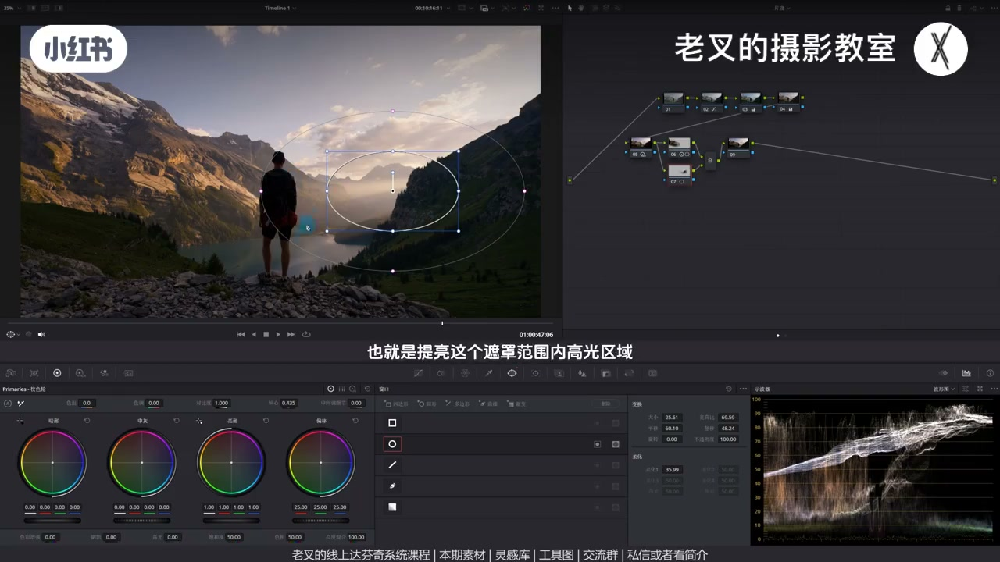

内容要点
网上钢笔抠得很细再调色，大概率用不上——真要精细不如神奇遮罩。遮罩核心是区域调整。夕阳剪影案例：先微暖，用 HDR 拉开远处山体高光层次；全局加对比诊断层次不足后，才用超大柔化圆遮罩给山加对比、并行提光源（高光滑块不伤背光）、近景加对比，再用渐变遮罩压天空。重点：结合自带分区能力的工具，粗遮罩就够。
知识结构
钢笔精细遮罩大概率用不上；还原后微暖定夕阳基调。
远山发灰：降 Shadow/Light、抬 Highlight，拉开窄高光区反差。
全局猛加对比到没法看再开关：层次仍不足、发灰，才进入局部。
山大柔化圆遮罩加对比；并行提光源用高光滑块；近景对比度+轴心；渐变压天空用阴影滑块。
减色调去紫、蜘蛛网蓝偏青、密度耐看；可选 2.35 遮幅。精细遮罩少用，优先分区工具。
遮罩服务于区域调整，不是描边比赛。先全局/HDR 能解决的别急画罩；要画就画大柔化，并配合高光滑块、对比度+轴心等自带分区能力的工具，省掉钢笔精细。真要抠细，优先神奇遮罩。
00:00-00:45精细钢笔遮罩：也许用得上，大概率用不上
朋友常在网上看到钢笔抠得很细再调色的视频，问是否必须。老叉觉得也许用得上，但大概率用不上；真要这么精细，不如用神奇遮罩。遮罩核心目的只有一个：区域性调整。
以本片夕阳山景为例：还原后底子不错，但缺层次质感，颜色也不够夕阳。四号节点略加色温与色调微暖，定基调后再调影调。

00:45-01:43远山发灰：HDR 拉开高光窄带
远处山带雾发灰；人物比重不小但光照下大概率提不太亮，远山反而关键。波形上山体高光信息很窄又处亮面——要拉开高光反差。
第二排首节点：略降 Shadow 让山体暗面更暗，略降 Light 再压高光，再抬 Highlight 把高光找回来。开关对比，山体立刻立体很多。

01:43-02:17全局加对比诊断：层次够不够
判断层次：新节点全局加对比度到没法看，再开关——很直观看出仍发灰、层次不足。于是试小幅全局加对比：山还行，但近景背光太黑、部分光源又该更亮——有好有坏，说明需要局部，这时才上遮罩。
02:17-04:20粗大柔化遮罩 + 分区工具，不必描边
远山不钢笔描边：超大柔化圆遮罩，沿用「加对比有效」的思路再加对比，轴心略暗一点。罩到部分人物也没关系——变化很小，别纠结。找光：并行节点给远处光源画罩，用一级轮高光滑块提亮，只动罩内高光，不伤近处背光，省掉精细遮罩需求。
近景石头有受光、中间弧偏灰：再并行画罩，对比度+轴心强化。只抬高光不能解决发灰；全局曝光会整区一起亮更灰。对比度让亮更亮暗更暗，轴心控制提亮侧重。最后渐变遮罩顺光源方向压天空：阴影滑块压暗部、略抬高光护山体——波形上天空比山暗，才能只压天。

04:20-06:19快速修色与结论：遮罩会简单，工具要会配
与还原对比，曝光分区已明显改善。颜色略偏紫则减一点色调；可用向量示波器让蓝偏青增质感，再节点给蓝青加密度、略降饱和更耐看。可选 2.35:1 遮幅。
重点：他的遮罩通常很简单，但有意结合自带分区能力的工具。画精细遮罩个人认为用处较小；真要精细，神奇遮罩更好。素材记得领取练手。
完整转录（236段）
以下文本由 Whisper medium 模型自动转录，可能存在少量识别误差，已尽可能修正。
前两天我有朋友给我发消息
说最近经常在网上看到那种用钢笔抠的很细的
然后在调色的视频
他问我真的需要这样做吗
我其实是觉得也许会用得上
但是大概率用不上
如果真的需要化这么精细的遮罩的话
那你还不如用神奇遮罩呢
那遮罩到底要怎么用呢
我们以这个画面为例
遮罩的核心目的就是一个
能够实现区域性调整的作用
我们给这个素材做一下还原
还原好之后
其实能看到这个画面内容底子还是不错的
但是整体画面没有层次
没有质感
而且颜色也不是特别符合夕阳的一个效果
所以呢
我在4号节点给他稍微加一点暖
也就是稍微加一点色温
再给他加一点点色调啊
好
大概是这样的结果
看着还可以对吧
然后呢
我们就开始去调影调的关系
首先我们看到远处这个山还是有点发灰的
这有点雾气
这个空气质量不是特别好
虽然人物的笔重不算小
但是这样的光照情况
人物大概率不会被体量太多
有可能你也体量不了
所以远处的山此时就变得很重要了
而他的发挥
我们从波形图上来看
他其实是在于他的高光的信息不够拉伸
我们能够看到他所覆盖的内容
其实就是非常非常窄的一个区域
而且他又处在亮面
所以呢
我们可以拉开高光部分的反差
建立几个节点拉到第二排
在第二排的第一个节点中
我们稍微降低点Shadow色轮的曝光
让他这个山体上的暗面能够暗一些
我们看这边
对吧
再然后呢
我们还可以再稍微降低一点Light色轮的曝光
不用降太多
稍微让他高光能够再往下压一压
然后我们还需要再稍微提高一点
Highlight色轮的曝光
把他的高光给他找回来
那此时我们看到这个山
这是调整前
这调整后
效果挺好的
对吧
那这时候我们就要想这样做就够了吗
我们之前说过一个判断画面层次
是否足够的方法
就是新增一个节点
给画面全局增加对比度
加到没法看为止
然后开关这个节点
这样一做是不是就很直观的能看到
画面其实层次还是不足
还是有点发挥的
那么这时候
我们就要先考虑
能不能通过全局增加对比度的方式
来解决这个问题
我们给他稍微加一点对比度
大概到这个程度
我们看到这个山其实还是不错的
但是近景这个背光面就太黑了
这里的光源
他其实也挺好的能够亮一些
但既然有好有坏
就说明我们需要去局部调整
这时候才是用到遮罩的一个情况
我们首先肯定还是先调整远处这个山
我不会用钢笔给他描这个边
给他扣得非常细
没啥意义
我觉得我们给他可以直接画一个
超大柔化的圆形遮罩
大概是这个范围
我们刚刚给全局加对比的时候
山的效果其实不错的
对不对
所以这时候我们还是给他增加对比度
然后配合轴心可以让他稍微暗一点点
好
大概是这个效果
但是会有朋友会说
你这个遮罩不是包含了一部分任务的区域吗
这没啥关系的
因为他的变化实在太小了
不用太纠结这一点点的变化
再然后我们想让画面有亮点
那就需要去找光
我们刚刚通过增加对比度的方式
让这里的光源
这一处
这里这个地方
它的提亮机效果还是挺好的
对吧
那所以呢
我们也需要按住Alt加P或者是Option加P
建立一个并行节点
给远处这个光源
也画一个遮罩
大概是这个区域
然后我们要给他提亮
那这位朋友又有疑问
如果你要提亮的话
不会把近处这个受光面也提亮吗
要知道的是
达芬吉有许多的工具都自带分区调整的能力
我们要提亮的是这个光
也就是提亮这个遮罩范围内高光曲
所以我们可以用
比如说一级校色轮的高光滑块
用这个工具的提亮
就不会影响到我们这里的背光面了
对不对
也就省了我们画精细遮罩的一个需求
再然后
虽然说人物是剪影的效果
但是我不希望他
你看这地面上的这个石头
它其实有一定受光的情况的
它有光感
我不想让它太暗
而且中间这里的弧也有点太灰了
所以呢
我们可以再按住Alt加P建一个并行节点
然后画一个这样的遮罩
也是利用对比度和配合轴心的方式
来给他做强化
大概是这个结果
你看效果挺好的
对不对
那这位朋友又来了
那你为啥不直接提高高光呢
提高光不能解决发挥的问题
我们来看一下
如果我只是给他提高高光滑块
它确实提亮了
但它该会还是回
因为我们没有把它安补给他做调整
所以我们用对比度会更好
那为啥不直接提高全局的曝光呢
同样也是因为不能解决发挥的问题
而且全局曝光的提高
会把这个区域内所有的内容都提亮
它一定会更回
增加对比度是让亮的更亮
暗的更暗
那配合轴心的能够控制我们提亮的区域
这样就能够既解决发挥的问题
又能够做到提亮的效果
最后呢
所以我们也可以再来个地形节点
建立一个和光源方向平行的一个渐变遮罩
大概是这样的一个形状
然后呢
我们可以稍微压一下天空
让它做一个渐变的效果
那这个时候怎么压
这个遮罩的范围会带上这个左上角的山体
我们要做的是让天空压
而从波形组上来看
天空的曝光比起山的曝光
其实是要低的对不对
所以我们可以降低阴影滑块
来压暗暴
同时呢也可以适当的提高一点高光滑块
来确保山体不会受到影响
我们看到这一部分高光可以再来一点
那这样的调整呢
我们就只能天空压了对不对
那么到现在为止
我们就利用一个非常简单的遮罩以及操作
来让画面做好了曝光的分区
并且解决了它发挥的问题
我们可以看一下这个效果
这是还原后的画面
这是我们调好后的画面
整体感觉还是挺棒的对不对
素材我也传到了现场分享平台
私信或者看我姐姐来加入后免费自取
还要打分级的线上系统课程和线下调色训练营
再然后我们可以快速调一下颜色
我觉得整体的颜色稍微有点偏紫了
我们就给它稍微减一点点色调
减到这个程度就行
哎挺好的
同时你也可以打开老板的蜘蛛网
把蓝色往青色方向稍微走一点
让它蓝色更有质感
也就是让天空更有风格
我们也可以再来一个节点
给天空的蓝和青增加一点密度
也可以给它再稍微降低一点饱和度
这样颜色就会更耐看
这样我们就快速的调好了
如果你愿意的话
也可以给它上一个遮浮
2.35比1的遮浮
这种感觉也挺棒的对不对
我们可以与还原后的画面
再一次做对比
这是还原后的画面
这是我们调好后的画面
不错吧
重点在于遮罩的会
只要一般我的遮罩
会画的还是比较简单的
但是要有意的去结合
自带分区能力的工具来配合的使用
画精细遮罩这件事情
我个人认为用处还是比较小的
当然不是说它绝对用不上
还是有可能的
但是一般情况下我不怎么会用
如果你真的要画精细的话
还是那句话
用神器遮罩会更好
素材大家别忘了
领取过去做练练手
讲到这里